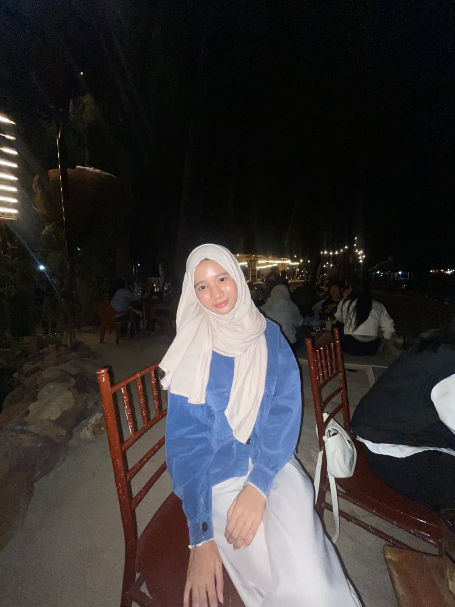

Mahasiswa Teknik Informatika | NIM: 2501020118
Saya Zahra Dea Amanda, mahasiswa Teknik Informatika dengan NIM 2501020118 dari Universitas Maritim Raja Ali Haji. Saya tertarik dengan dunia teknologi, terutama pemrograman, database, dan pengembangan website. Saya masih terus belajar dan mencoba memahami berbagai hal di bidang IT melalui tugas dan proyek perkuliahan. Saya juga suka mencoba hal-hal baru dan mencari tahu sesuatu yang sebelumnya belum saya pahami. Bagi saya, tidak harus langsung bisa semuanya, yang penting mau belajar dan menikmati prosesnya.
© 2026 Zahra Dea Amanda